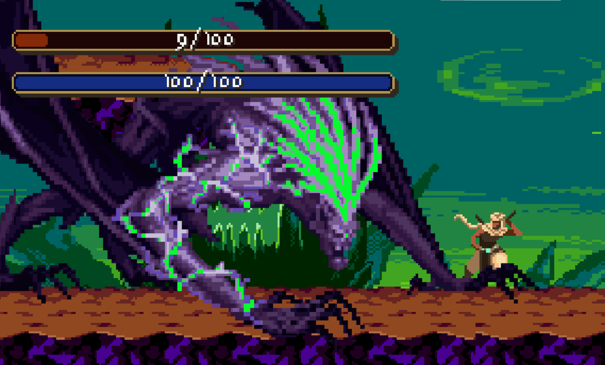
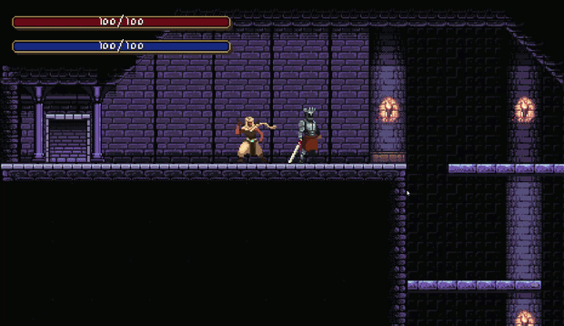

ABOUT
ABOUT STORY
STORY CHARACTERS
CHARACTERS GAMEPLAY
GAMEPLAY CREATOR
CREATOR


THE STORY


THE LABYRINTH
The Labyrinth is not a destination, but a fracture in the skin of the world. When the great maws opened across the globe, they did not lead to caves or pits, but to an impossible convergence of realities where logic went to die. Within its shifting walls, the laws of existence are mere suggestions; a traveler might cross a threshold of ancient stone only to emerge into a sprawling expanse of impossible flora, or a landscape where the very elements are inverted and hostile. It is a non-Euclidean nightmare that is constantly rewriting its own geometry, ensuring that no map is ever accurate and no path remains the same once it has been walked.

THE PITBORN
Deep within the shifting strata dwell the Pitborn—entities that feel less like living things and more like errors in the fabric of the Labyrinth. They are the silent sentinels of the descent, existing in defiance of biological reason and the laws of the surface. There are those who whisper of a darker connection between the monsters and the lost; they note the way a Pitborn's movements can feel like a distorted memory, or how their presence seems to resonate with a familiar, hollow grief.

THE LABYRINTHIANS
To the world above, they are legends; to the Labyrinth, they are guests who never truly leave. Whether seeking treasure, glory, adventure, or a desperate escape from the surface, all who enter are eventually bound by the "Labyrinth's Call"—a maddening drive to reach the bottom. Here, death is a broken promise; revival is certain, but each return erodes the soul until the original motive is forgotten. While history celebrates a rare few who "conquered" the depths, a hollow silence remains in their eyes. For those who have heard the Call, the surface is merely a waiting room for an inevitable return to the abyss.